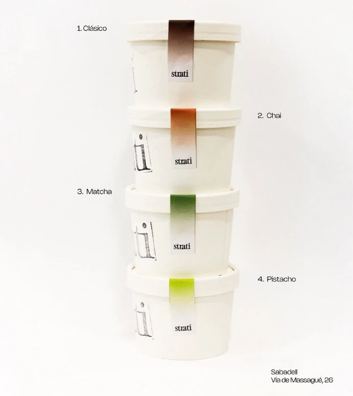
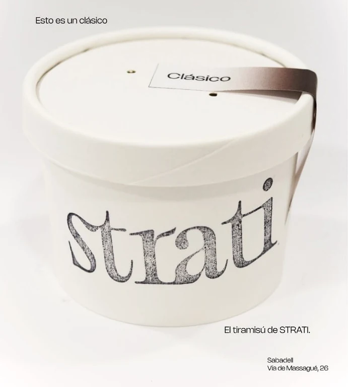
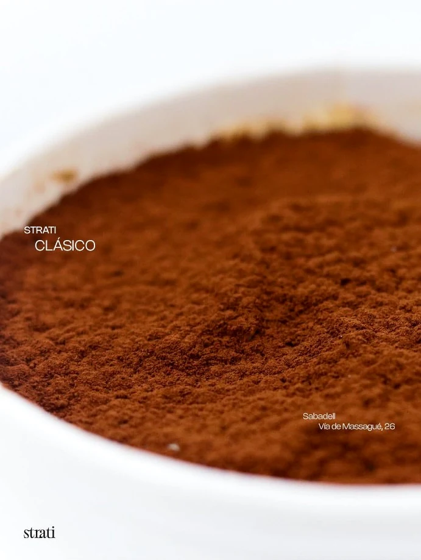
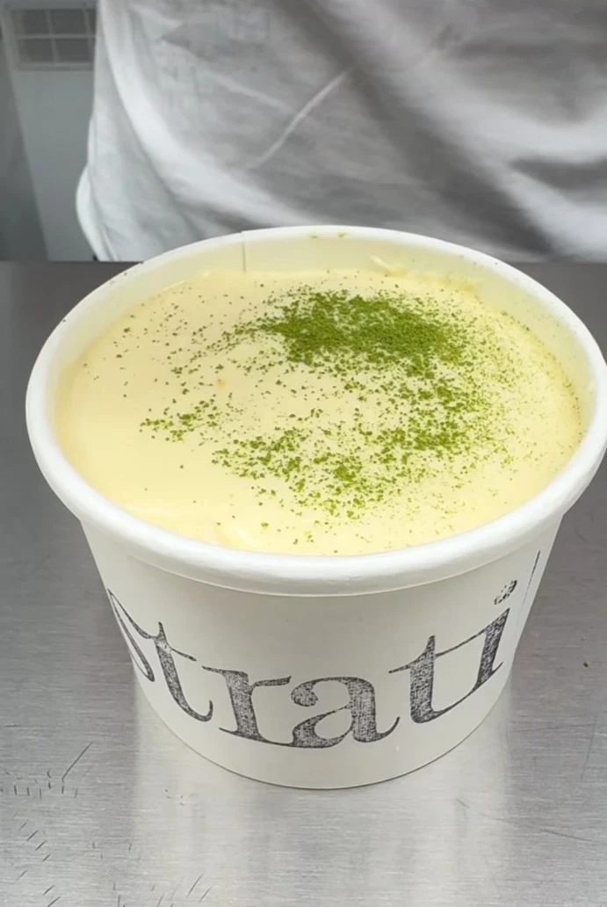

01
Clásico
El sabor con el que empezó todo.

Más que
tiramisú.
El tiramisú
de Strati.

01 / PRODUCTOSTRATI · TIRAMISÚ · SABADELL
Distintos sabores.
La misma forma de disfrutarlo.
02 / UNA CUESTIÓN DE SABOR
Baja para descubrir

01 / 04
El sabor con el que empezó todo.
STRATI
VIA DE MASSAGUÉ, 26
El sabor con el que empezó todo.
No es lo que parece.
Cremoso. Intenso. Irresistible.
Hay sabores que solo aparecen una vez.

UN PEQUEÑO RITUAL
03 / 05
Esto es un clásico.
Hay sabores que solo aparecen una vez.
04 / SABOR
Cremoso.
Intenso.
Irresistible.
PRODUCTO · SABORES · SABADELL
Nacido en Sabadell.
Via de Massagué, 26.
Una pausa.
Varias capas.
Mucho Strati.
05 / VEN A VERNOS
Via de Massagué, 26
08202 Sabadell